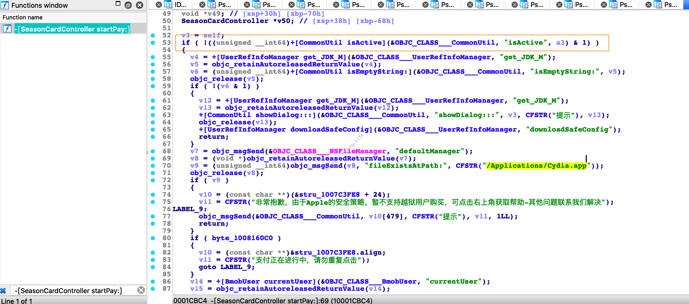
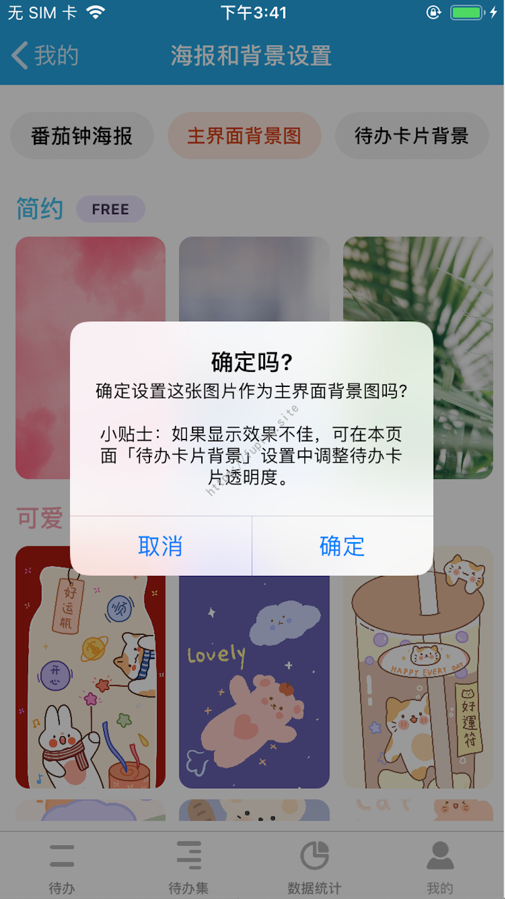
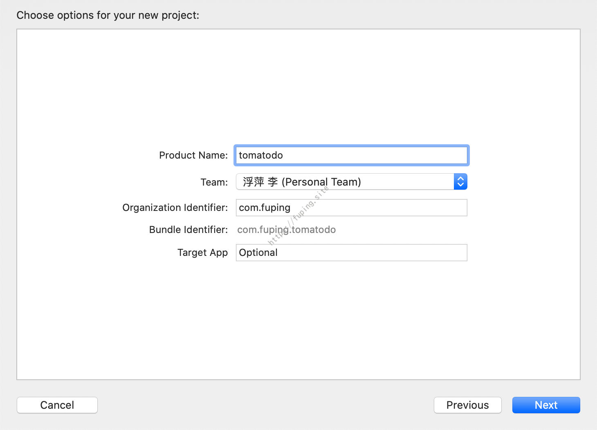

IOS逆向初探
0x00 前言
本文记录了某次逆向一个简单APP的过程，来简单介绍一下IOS逆向的流程，比较基础，属于入门级教程。包括砸壳、HOOK、插件的编写等一系列流程。
0x01 背景
前段时间在一个老师那里看到一群考研人的打卡信息，该APP能够详细的记录和分析学习过程。
于是就下载试用了一下。但是免费版有许多的限制。如免费版的话仅可以添加2个”习惯”类代办，
使用背景图也是需要开通季度卡的（虽然并没什么用）。
手机上打开”季度卡”页面，由于手机经过了越狱，在开通的时候提示非常抱歉，由于Apple的安全策略，暂不支持越狱用户购买，可点击右上角获取帮助-其他问题联系我们解决。
虽然免费版不影响正常使用，但是本着学习的态度想查看一下其越狱检测的绕过，结果发现竟然可以白嫖使用VIP功能。
0x02 逆向分析
IOS下逆向常规操作判断该APP是否加壳(加密)，有壳的话先进行砸壳，然后利用IDA或者Hopper对脱壳后的Mach-O文件进行分析。首先需要准备一下环境和工具。
1.准备工作
手机设备：一台越狱的IOS手机，版本为12.4.1，安装了OpenSSH和Frida，Frida版本为14.1.3。
逆向分析工具：IDA或者Hopper。
开发工具：Xcode。
抓包工具：BurpSuite 或者Charles。
电脑上安装Frida版本为14.1.3。
由于是APPStore下载的APP，是经过了加壳的。接下来开始对该APP进行砸壳。
2. 砸壳
砸壳的脚本有很多，如frida-ios-dump、dumpdecrypted、Clutch、yacd等，这里采用的工具是frida-ios-dump。
安装方法：
1 | git clone https://github.com/AloneMonkey/frida-ios-dump |
安装完成所需的依赖后打开dump.py进行配置。
1 | User = 'root' |
使用方法:
python3 dump.py APP名字 或者python3 dump.py Bundle identifier
将手机与电脑连接，打开APP，执行frida-ps -Ua,查看APP名字和Identifier。
1 | frida-ps -Ua |
然后进行砸壳
1 | iproxy 2222 22 |
也可以执行
python3 dump.py APP名字进行砸壳
砸了壳后提取出TomatoTime可执行文件，扔到IDA或者Hopper里面分析。
3.分析
根据关键文字进行搜索，这里搜索的是”越狱”。由于Mac上的IDA7.0搜不出来中文字符，所以可以使用Hopper搜索，找到函数位置后使用IDA打开。也可以全程使用Hopper进行分析。
使用hopper搜索”越狱”字符串
发现是在方法startPay:中
找到后可以继续使用Hopper进行分析，或者在IDA中分析，我在这里采用了IDA。
直接在函数中搜索-[SeasonCardController startPay:]。
发现是该APP判断是否越狱，是根据是否存在Cydia来进行判断的。当/Applications/Cydia.app文件存在时，则提示用户越狱。
绕过这种越狱检测的方法也很简单，直接进行Hook fileExistsAtPath:方法即可。当判断/Applications/Cydia.app文件存在时将返回值改为0，即可绕过这里的越狱判断。
4. 越狱绕过
根据上面的分析，开始对-[NSFileManager fileExistsAtPath:]进行Hook。
代码如下：
1 | var jailbreakPaths = ["/Applications/Cydia.app"]; |
执行方法：
1 | frida -U -l tomatodo-jailbreak-bypass.js -f com.xxxx.tomatodo --no-pause |
此时再次打开APP，可以成功进入季度卡开通界面。
当然也可以使用objection进行绕过越狱检测。
使用方法
1 | objection -g "com.xxxx.tomatodo" explore --startup-command "ios jailbreak disable" |
也是可以成功绕过越狱检测的。
5.Vip功能绕过
在-[SeasonCardController startPay:]方法中有第53行这样一个判断，根据意思应该是判断是否激活。

根据上面的代码，猜测+[CommonUtil isActive]的结果是判断是否开通了季度卡的依据。在这里使用frida-trace进行追踪，frida-trace 用于跟踪函数或者 Objective-C 方法的调用，-m 跟踪某个 Objective-C 方法。
使用方法：
1 | frida-trace -U -f com.xxxx.tomatodo -m "+[CommonUtil isActive]" |
它会在当前目录下生成一个 __handlers__目录，然后在目录下生成一个 类名/方法名.js 文件，这里的文件名为/CommonUtil/isActive.js。当在调用该方法时，会输出以下信息，按 Ctrl-C 可以停止跟踪。
打开生成的js文件会看到有两个函数，onEnter 是进入该函数时会执行的代码，onLeave 是该函数执行完离开时会执行的代码。在这里直接修改返回值retval为1。其代码如下：
1 | { |
再次执行 frida-trace，/CommonUtil/isActive.js 文件不会覆盖，会执行刚才添加好的代码，如下：
此时发现不仅可以使用季度卡背景
而且也可以可以添加多个习惯类代办
其实并不是，在测试的时候由于没有注意，添加了两个
习惯和一个目标，导致认为通过hook+[CommonUtil isActive]方法可以解锁全部的VIP功能，一直到后来写插件的时候才发现该错误，在编写非越狱插件时有详细的分析。
所以通过hook方法 +[CommonUtil isActive]可以实现到VIP功能的使用。
但这些都是在越狱手机上使用的，如果想在非越狱手机上使用的话，就需要使用一些插件来运行在非越狱手机上。
0x03 编写非越狱插件
编写插件采用了非越狱插件开发集成神器MonkeyDev，集成了theos+Tweaks+Reveal.framework +Cycript +class-dump+CaptainHook。
安装和卸载可以参考https://github.com/AloneMonkey/MonkeyDev/wiki/%E5%AE%89%E8%A3%85
安装完成后新建MonkeyApp
输入项目名称
项目建立后将砸壳后的APP拖入到TargetApp目录下。
这里使用Logos进行Hook代码，HOOK 某个类里面的某个对象方法语法：
1 | %hook 类名 |
这里我们需要对CommonUtil 类的方法isActive进行HOOK，修改返回值，代码如图所示。
连接非越狱手机后使用⌘+R运行该项目，手机上会多出来一个名字一样的APP。理论上来讲该APP可以使用其VIP功能。
首次在新设备上运行，需要设置-通用-描述文件与设备管理中信任证书。

然而此时只能使用VIP的部分功能，可以使用会员背景，但是无法添加超过2个习惯和目标类代办。此时才发现在使用frida进行hook的时候，测试添加多个习惯类代办时添加了两个习惯，一个目标，因此给出了可以使用全部VIP功能的结论。
通过关键字定位到-[AddTodoController confirm]方法。
发现添加超过2个习惯和目标类代办需要判断GVUserDefaults的isActive是否为真。
而且查看+[CommonUtil isActive]方法，其返回结果也是获取的GVUserDefaultsisActive属性的值。
对+[GVUserDefaults standardUserDefaults]进行hook，修改其isActive属性。
代码如下：
1 | @interface GVUserDefaults : NSObject |
执行结果
此时可以使用超过2个习惯和目标类以及使用全部的背景功能。
0x04 总结
本文通过一个简单的APP逆向，实现了越狱绕过以及解锁VIP会员功能。简单的介绍了一下相关工具的使用。关于越狱绕过，该APP越狱检测的方法很简单，只是判断了文件是否存在。其他检测的方式有：可以尝试读取系统所有的应用名称列表，看有无权限获取；检测stat是否出自系统库等。更多检测方式可以参考iOS开发-安全相关-越狱检测 。
对于该APP使用体验来讲，免费版功能已经够用了，而且无广告，如果有需要的可以开通季度卡，解锁更多功能。